Overview
- Introduction
- k-Space
- Image Reconstruction
- Filters
- Outlook and Conclusion
3. Image Reconstruction
In the last section, you made an acquired $k$-space Java-manipulatable. Now, we want to actually work with it. To reconstruct an MR image from it, we need to use an inverse Fourier Transform. The method for the Fourier Transform itself is provided by us, but you need to implement the workflow, which also involves shifting the buffer array, as explained below. By the end of the section, you will have implemented a framework to reconstruct an image from $k$-space and to calculate a $k$-space from an image.
3.1 FFT and FFT Shift
3.1.1 What is an FFT / iFFT?
The Discrete Fourier Transform is an extremely important tool in all engineering contexts. One of the reasons why it had such
great success as an analysis tool and also as an MRI reconstruction tool is a very pragmatic one: it has an extremely fast and efficient
implementation algorithm: the Fast Fourier Transform (FFT).
One of the computational particularities of the FFT is that it uses a representation of the $k$-space where the so-called
DC component - the value in $k$-space that refers to $k=0$ - is at the index 0 of the transformed array. In MRI, however,
the DC component is located at the center of the acquired data. So we first need to rearrange $k$-space in order for the FFT
algorithm to do its work.
To be precise, the DFT / FFT describes the measurement process of the MRI process (getting the spatial frequencies from the measured object). The inverse operation of that, which you need to reconstruct the image from the spatial frequencies is the inverse DFT / iDFT or inverse FFT / iFFT. They forward and inverse Fourier Transforms only differ by a minus sign in front of one variable in their definition, but let's stick to proper wording.
3.1.2 $k$-space and the FFT Shift
As stated above, MRI $k$-space is measured with its low-frequency components in the middle of the matrix. For the sake of simplicity, let's first look at a 1D representation by looking at one line of the 2D matrix in the middle of the $k$-space.
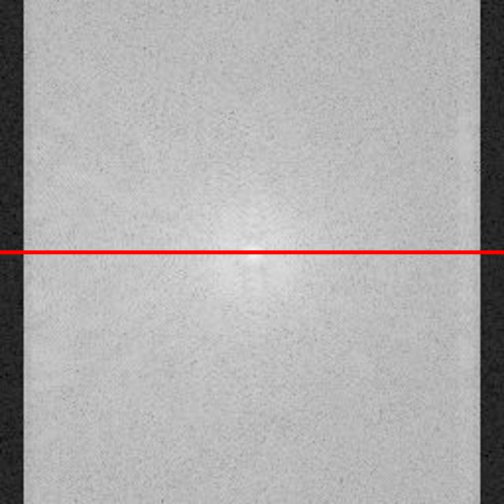
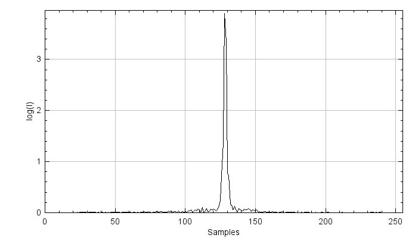
Figure 3.1. A magnitude image of k-space (top) in logarithmic scale, and the signal intensity along the red-line direction (bottom).
Figure 3.1 shows signal intensities concentrate in the middle of the spectrum - around the DC component - as given by the nature of the MRI acquisition. From an implementation point of view, however, the DC component should be shifted to the first index before applying an iFFT. Let's not go too deep into Fourier transform theory or the specifics of the FFT algorithm here. Just keep in mind, (i)FFT wants the DC component at index 0, MRI measures the DC component at index $N/2$.
The so-called FFT shift is a construct that is often used (not only in MRI). It simply shifts samples from one half of the spectrum to the other half. Figure 3.2 shows an example of the 1D FFT shift. A full spectrum lies in an index range of $[0, N-1]$, where $N$ represents the vector length. Samples in a range of $[0, N/2-1]$ are then shifted to the other half spectrum of $[N/2, N-1]$ and vice versa.
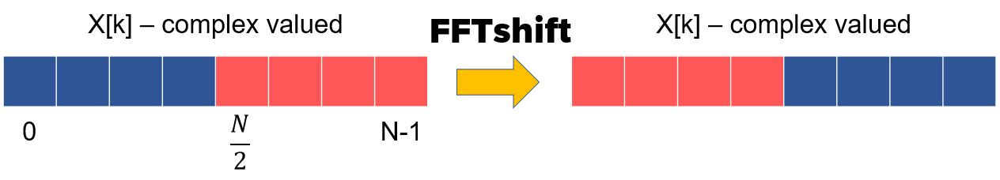
Figure 3.2. A graphical representation of the FFT shift.
3.2 Apply FFT Shift to the 1D Case
To get a better understanding of the FFT shift, you will start in 1D and implement a new class ComplexSignal.
package project;
import mt.Signal;
import java.util.Objects;
public class ComplexSignal {
protected mt.Signal real; //Image object to store real part
protected mt.Signal imag; //Image object to store imaginary part
protected String name; //Name of the image
}
Create constructors and getters. Remember: class objects, real, imag, and name,
must be set in the constructor. Use the usual constructors for ComplexSignal, as shown below.
(Side note: since the FFT only works for signal lengths of 2 to the power of $n \in \mathbb{N}$,
our implementation restricts to those cases. This applies to the 2D case as well.)
public ComplexSignal(int length, String name)
public ComplexSignal(float[] signalReal, float[] signalImag, String name)
public float[] getReal() // get the buffer of the real
public float[] getImag() // get the buffer of the imag
public String getName()
public int getSize()
Generate a sawtooth-like wave (remember exercise 1), composed of five sine waves with different frequencies in a generateSine() method.
Frequencies for five sine waves are
$[\text{numWaves}, 2 \cdot \text{numWaves}, \cdots, 5 \cdot \text{numWaves}]$,
and the number of samples is equal to the size of the ComplexSignal.
Set the real part of the ComplexSignal as the constructed signal and the imaginary parts to zero.
You can use setAtIndex() to assign corresponding values to the real and imaginary parts.
public void generateSine(int numWaves)
You can plot your sinusoid wave using the given method DisplayUtils.showArray(). In this case, the signal length is 256.
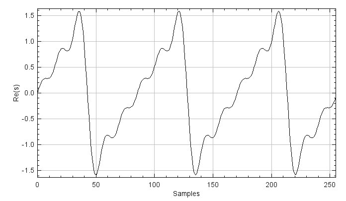
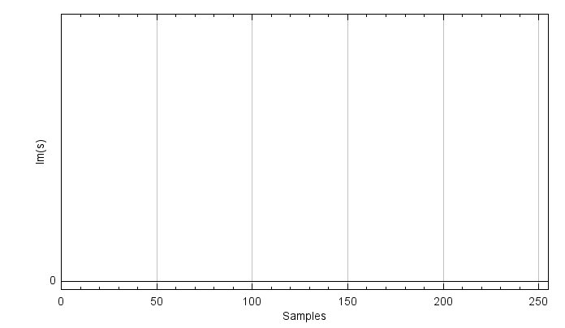
Figure 3.3. The real (top) and imaginary (bottom) parts of the sinusoidal wave are composed of five different sine waves.
To show the magnitude of the signal, you need to implement calculateMagnitude() and getMagnitude() for displaying with DisplayUtils.showArray(). You can use atIndex() and setAtIndex() for calculateMagnitude().
private Signal calculateMagnitude()
public float[] getMagnitude()
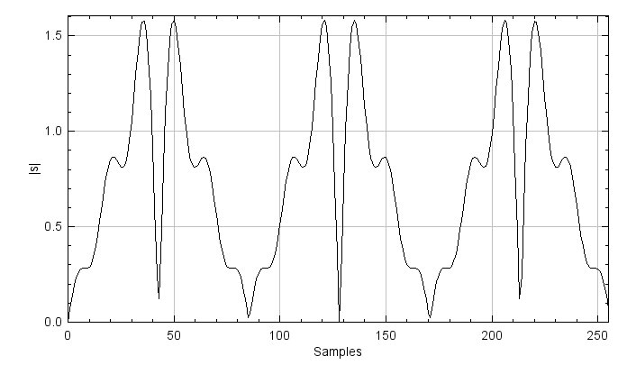
Figure 3.4. The magnitude of the summed-sinusoids signal.
Now, apply an FFT to the signal using the given method FFT1D() from ProjectHelpers.java and plot the magnitude signal. The methods are commented out
to avoid conflicts when running the program prior to this point. Remove the comment symbols for the methods related to ComplexSignal() in ProjectHelpers.java: FFT1D(), toComplex(), fromComplex(), and fft().
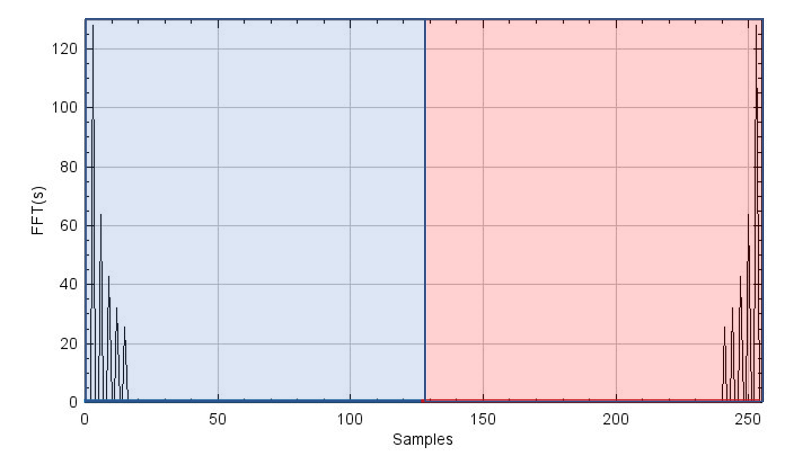
Figure 3.5. The magnitude of the FFT of the signal. Since the complex sinusoid signal is composed of five different sine waves, there are five peaks at the low-frequency part.
Once you have created the FFT result, it is time to implement the FFT shift.
If you shift the FFT signal to the right by one sample, the rightmost signal shifts to the leftmost index: it's a cyclical shift.
Take your time to understand this, referring to Figure 3.2. If you shift by $N/2$,
the left and right half of the signal are swapped with each other. In other words, you can implement the fftShift1d()
method using a swap() method, which only swaps the left and right half of the array.
You will need to use setAtIndex() and AtIndex().
Additionally, as signals are complex numbers, you must consider both the real and imaginary parts.
public void fftShift1d()
private Signal swap(Signal input)
You can plot the FFT shift result and play around, shifting the signal back and forth using
fftShift1d() multiple times.
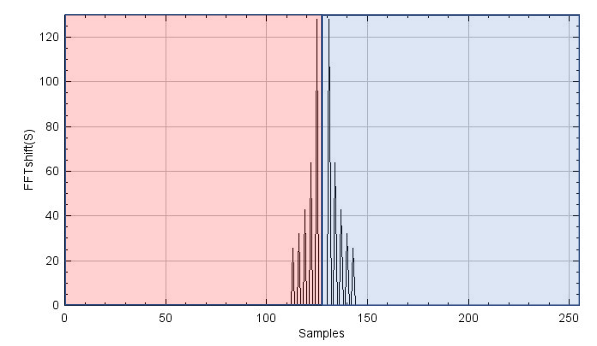
Figure 3.6. Shown is the result of an FFT shift applied out once (top) and twice (bottom) to the FFT result. The figure at the bottom shows the same as Figure 3.5, meaning that if the FFT shift is applied twice, the signal comes back to the original position (this is valid for even length signals). This property is important when you reconstruct k-space. Moreover, the y-axes represent the magnitude of the FFT-shifted S and S' for plots above and below, respectively, where S and S' stand for FFT(s) and FFTshift(FFT(s)).
3.3 Expand FFT shift to 2D in ComplexImage
Expanding the concept of the FFT shift from the 1D case to the 2D case is not so complicated. It is the result of doing an FFT shift along the first dimension and then the second.
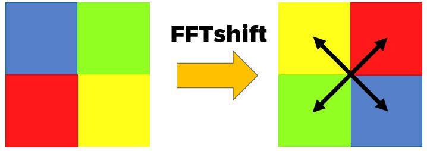
Figure 3.7. Graphical example of the 2D FFT shift. One quadrant is swapped with another quadrant in the diagonal direction. This is due to the fact of swapping one sample along the x and y directions.
You need to consider that swapping one sample is carried out along both $x$- and $y$-directions in the 2D case, meaning that one quadrant is swapped with another in the diagonal direction. We move the working java script to the ComplexImage.java. You will add new methods called fftShift() and swapQuadrants()
public void fftShift()
private Image swapQuadrants(Image input)
In fftShift(), use swapQuadrants() to swap samples and setBuffer(),
which is a member method of the Image class, to set swapped samples to the buffer. Always consider that you are
dealing with complex numbers, using both real and imag.
You can expand your implementation in the 1D case to the 2D case with swapQuadrants().
Display the result of your 2D FFT shift.
Figure 3.8. k-spaces before (left) and after (right) applying the FFT shift. Low-frequency components are shifted to the edge after the shift, and vice versa. To match k-space size to an integer-power of 2 for the FFT, one dimension needed to be zero-padded, and such shows black strips (Not necessary in in our case so the implementation is optional).
3.4 Reconstruct MR image
Now, we are ready to reconstruct an MR image. The overview of the MR reconstruction process is depicted in Figure 3.9. One key point here is that after applying an FFT shift to the $k$-space or the image once, you have to apply the FFT shift one more time after applying the (i)FFT to bring it back to its original signal. Play around with (i)FFTs and the shifts and you will see.
InverseFFT2D() and FFT2D() methods are provided in ProjectHelpers.java.
Figure 3.9. An overview of the MR reconstruction process.
Reconstruct the MR image from the measured $k$-space data. Show image magnitude, image phase, image real part, and image imaginary part as below.
| 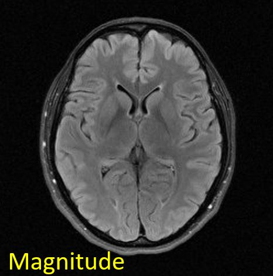 |
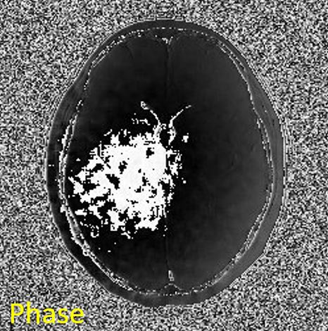 |
| 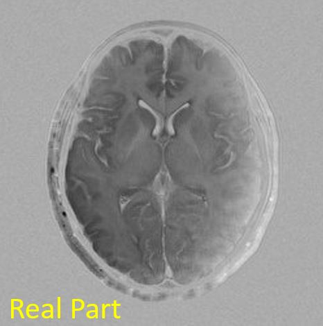 |
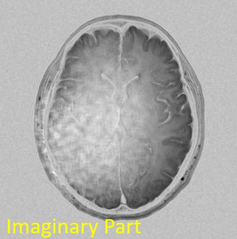 |
Figure 3.10. Reconstructed images. Image titles are presented at the left top corner of the each figure.
Then, let's check if a forward FFT works fine with the reconstructed image. The original $k$-space should be reproduced from the FFT on the reconstructed image.
| 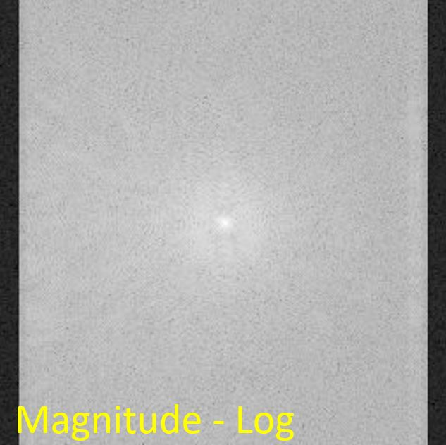 |
 |
Figure 3.11. Reproduced k-space from the reconstructed image. The reproduced k-space shows as the same as the original k-space.
In your Project report, you should:
- Reconstruction (2.2): Describe reconstruction in your own words. Why is FFT-Shift necessary?
- FFT (2.2.1): Explain why an FFT shift needs to be carried out on $k$-space before and after the iFFT is applied. What is the purpose of the FFT shift? Where are low-frequency components located in $k$-space? What happens if you only apply the FFT shift before, but not after performing the iFFT on the $k$-space? (explain this with figures)
- Interpretation (2.2.2): Interpret the reconstruction results. Which image do radiologists view and diagnose among images of magnitude, phase, real part, and imaginary part? Can $k$-space be reproduced from the reconstructed image like the original $k$-space? If so, what is the procedure for that? Please explain the reasons why or why not.